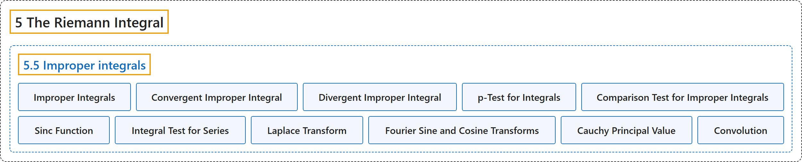

5.5 Improper integrals
Classification

Glossary
| Term | Definition | 中文翻译 | Source |
|---|---|---|---|
| 5.5 Improper integrals 反常积分 |
(No definition) | （无定义） | Lebl, 2026, section 5.5 |
| Improper Integrals 反常积分 |
"For such intervals or functions, the Riemann integral is not defined, but we will write down the integral anyway in the spirit of Lemma 5.2.8. These integrals are called improper integrals and are limits of integrals rather than integrals themselves." | 对这样的区间或函数，黎曼积分没有定义，但我们仍按引理 5.2.8 的精神写出积分。这些积分称为反常积分，它们是积分的极限，而不是积分本身。 | Lebl, 2026, section 5.5 |
| Convergent Improper Integral 收敛的反常积分 |
"Suppose \(f \colon [a,\infty) \to \mathbb{R}\) is a function such that \(f\) is Riemann integrable on \([a,c]\) for all \(c < \infty\). We define \(\int_a^\infty f := \lim_{c \to \infty} \int_a^c f\) if the limit exists. If the limit exists, we say the improper integral converges." | 设 \(f \colon [a,\infty) \to \mathbb{R}\) 对所有 \(c < \infty\) 在 \([a,c]\) 上黎曼可积。若极限存在，定义 \(\int_a^\infty f := \lim_{c \to \infty} \int_a^c f\)。若极限存在，就说该反常积分收敛。 | Lebl, 2026, Definition 5.5.1 |
| Divergent Improper Integral 发散的反常积分 |
"If the limit does not exist, we say the improper integral diverges." | 若极限不存在，就说该反常积分发散。 | Lebl, 2026, Definition 5.5.1 |
| p-Test for Integrals 积分的 p 判别法 |
"The improper integral \(\int_1^\infty \frac{1}{x^p} \,dx\) converges to \(\frac{1}{p-1}\) if \(p > 1\) and diverges if \(0 < p \leq 1\). The improper integral \(\int_0^1 \frac{1}{x^p} \,dx\) converges to \(\frac{1}{1-p}\) if \(0 < p < 1\) and diverges if \(p \geq 1\)." | 反常积分 \(\int_1^\infty \frac{1}{x^p} \,dx\) 当 \(p > 1\) 时收敛到 \(\frac{1}{p-1}\)，当 \(0 < p \leq 1\) 时发散。反常积分 \(\int_0^1 \frac{1}{x^p} \,dx\) 当 \(0 < p < 1\) 时收敛到 \(\frac{1}{1-p}\)，当 \(p \geq 1\) 时发散。 | Lebl, 2026, Proposition 5.5.2 |
| Comparison Test for Improper Integrals 反常积分的比较判别法 |
"Let \(f \colon [a,\infty) \to \mathbb{R}\) and \(g \colon [a,\infty) \to \mathbb{R}\) be functions that are Riemann integrable on \([a,b]\) for all \(b > a\). Suppose that for all \(x \geq a\), \(\bigl\lvert f(x) \bigr\rvert \leq g(x)\). If \(\int_a^\infty g\) converges, then \(\int_a^\infty f\) converges, and in this case \(\left\lvert \int_a^\infty f \right\rvert \leq \int_a^\infty g\). If \(\int_a^\infty f\) diverges, then \(\int_a^\infty g\) diverges." | 设 \(f \colon [a,\infty) \to \mathbb{R}\) 与 \(g \colon [a,\infty) \to \mathbb{R}\) 对所有 \(b > a\) 在 \([a,b]\) 上黎曼可积，且对所有 \(x \geq a\) 有 \(\bigl\lvert f(x) \bigr\rvert \leq g(x)\)。若 \(\int_a^\infty g\) 收敛，则 \(\int_a^\infty f\) 收敛，并且 \(\left\lvert \int_a^\infty f \right\rvert \leq \int_a^\infty g\)；若 \(\int_a^\infty f\) 发散，则 \(\int_a^\infty g\) 发散。 | Lebl, 2026, Proposition 5.5.5 |
| Sinc Function sinc 函数 |
"An example to keep in mind for improper integrals is the sinc function. This function comes up quite often in both pure and applied mathematics. Define \(\operatorname{sinc}(x) := \begin{cases} \frac{\sin(x)}{x} & \text{if } x \neq 0 , \\ 1 & \text{if } x = 0 . \end{cases}\)" | 关于反常积分，值得记住的一个例子是 sinc 函数。这个函数在纯粹数学和应用数学中都经常出现。定义 \(\operatorname{sinc}(x) := \begin{cases} \frac{\sin(x)}{x} & \text{if } x \neq 0 , \\ 1 & \text{if } x = 0 . \end{cases}\) | Lebl, 2026, Example 5.5.12 |
| Integral Test for Series 级数的积分判别法 |
"Suppose \(f \colon [k,\infty) \to \mathbb{R}\) is a decreasing nonnegative function where \(k \in \mathbb{Z}\). Then \(\sum_{n=k}^\infty f(n)\) converges if and only if \(\int_k^\infty f\) converges." | 设 \(f \colon [k,\infty) \to \mathbb{R}\) 是递减的非负函数，\(k \in \mathbb{Z}\)，则 \(\sum_{n=k}^\infty f(n)\) 收敛当且仅当 \(\int_k^\infty f\) 收敛。 | Lebl, 2026, Proposition 5.5.13 |
| Laplace Transform 拉普拉斯变换 |
"Show that the Laplace transform of \(f\) exists. That is, for every \(s > a\) the following integral converges: \(F(s) := \int_{0}^\infty f(t) e^{-st} \,dt\)." | 证明 \(f\) 的拉普拉斯变换存在，即对每个 \(s > a\)，下列积分收敛：\(F(s) := \int_{0}^\infty f(t) e^{-st} \,dt\)。 | Lebl, 2026, Exercise 5.5.6 |
| Fourier Sine and Cosine Transforms 傅里叶正弦与余弦变换 |
"Show that the Fourier sine and cosine transforms exist. That is, for every \(\omega \geq 0\) the following integrals converge \(F^s(\omega) := \frac{1}{\pi} \int_{-\infty}^\infty f(t) \sin(\omega t) \,dt , \qquad F^c(\omega) := \frac{1}{\pi} \int_{-\infty}^\infty f(t) \cos(\omega t) \,dt\)." | 证明傅里叶正弦与余弦变换存在，即对每个 \(\omega \geq 0\)，下列积分收敛：\(F^s(\omega) := \frac{1}{\pi} \int_{-\infty}^\infty f(t) \sin(\omega t) \,dt , \qquad F^c(\omega) := \frac{1}{\pi} \int_{-\infty}^\infty f(t) \cos(\omega t) \,dt\)。 | Lebl, 2026, Exercise 5.5.7 |
| Cauchy Principal Value 柯西主值 |
"Suppose \(f \colon [a,b] \to \mathbb{R}\) is a function and \(a < c < b\), where \(f\) is Riemann integrable on the intervals \([a,c-\epsilon]\) and \([c+\epsilon,b]\) for all \(\epsilon > 0\). Define the Cauchy principal value of \(\int_a^b f\) as \(p.v.\!\int_a^b f := \lim_{\epsilon\to 0^+} \left( \int_a^{c-\epsilon} f + \int_{c+\epsilon}^b f \right)\), if the limit exists." | 设 \(f \colon [a,b] \to \mathbb{R}\) 是函数，\(a < c < b\)，且对所有 \(\epsilon > 0\)，\(f\) 在区间 \([a,c-\epsilon]\) 与 \([c+\epsilon,b]\) 上黎曼可积。若极限存在，定义 \(\int_a^b f\) 的柯西主值为 \(p.v.\!\int_a^b f := \lim_{\epsilon\to 0^+} \left( \int_a^{c-\epsilon} f + \int_{c+\epsilon}^b f \right)\)。 | Lebl, 2026, Exercises 5.5 |
| Convolution 卷积 |
"Let \(f \colon \mathbb{R} \to \mathbb{R}\) and \(g \colon \mathbb{R} \to \mathbb{R}\) be continuous functions, where \(g(x) = 0\) for all \(x \notin [a,b]\) for some interval \([a,b]\). Show that the convolution \((g * f)(x) := \int_{-\infty}^\infty f(t)g(x-t)\,dt\) is well-defined for all \(x \in \mathbb{R}\)." | 设 \(f \colon \mathbb{R} \to \mathbb{R}\) 与 \(g \colon \mathbb{R} \to \mathbb{R}\) 是连续函数，且对某个区间 \([a,b]\)，当 \(x \notin [a,b]\) 时 \(g(x) = 0\)。证明卷积 \((g * f)(x) := \int_{-\infty}^\infty f(t)g(x-t)\,dt\) 对所有 \(x \in \mathbb{R}\) 有定义。 | Lebl, 2026, Exercise 5.5.14 |
References
Lebl, J. (2026). Basic analysis I & II: Introduction to real analysis (May 22, 2026 edition). Retrieved October 29, 2026, from https://www.jirka.org/ra/html/